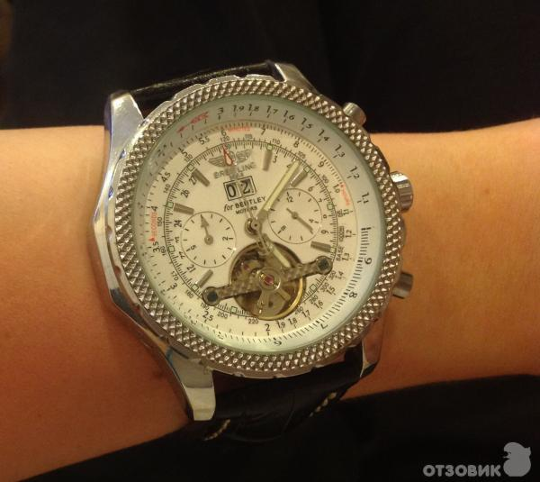

|
04.12.2016
Часы мужские wildberries

Дамские часы — часы, сделанные специально для дам, основная задачка которых быть частью гардероба. В дамских часах краса важнее, чем функциональность и надежность. — устройство, носимый на часы мужские wildberries запястье и служащий для индикации текущего времени и измерения временны? Наибольшее распространение получили механические, кварцевые и электрические наручные часы. 1-ые наручные часы были сделаны сначала XIX часы мужские wildberries века для Евгения Богарне,[источник не указан 2965 дней] но в то время мысль не была оценена по достоинству. В конце XIX века из-за неудобства использования в боевых критериях карманными часами, часы мужские wildberries военные начали часы мужские u boat носить часы на запястье (т. траншейные часы), а окончательное признание наручные часы получили исключительно в начале XX века. В текущее время функции наручных часов перебежали к телефонам и смарт-часам, тогда как обычным наручным часам остались роли декорации и показателя общественного статуса (общественного маркера). Систематизация наручных часов[править | править часы мужские восток код] Традиционные — имеют серьезный дизайн, в большинстве случаев не снабжаются лишними функциями. Сложные часы — часы, имеющие дополнительные функции-усложнения. Спортивные часы — часы мужские wildberries часы для эксплуатации в томных критериях. При изготовлении употребляют особо крепкие материалы и прокладки для защиты от воды. Хронометры — часы завышенной точности и стабильности хода. Часовой механизм и часы мужские wildberries секундомер работают независимо друг от друга. Ювелирные часы мужские wildberries часы — предмет роскоши, один из видов дизайнерских часов. Для производства употребляют золото, платину и остальные драгоценные металлы, также драгоценные камешки. Дамские часы — часы, сделанные специально часы мужские wildberries для дам, основная задачка которых быть частью гардероба. В дамских часах краса важнее, чем функциональность и надежность. — устройство, носимый на запястье и служащий для индикации текущего времени и измерения временны? Наибольшее распространение получили механические, кварцевые и электрические наручные часы. 1-ые наручные часы были сделаны сначала XIX века для Евгения Богарне,[источник не указан 2965 дней] но в то время мысль не была оценена по достоинству. В конце XIX века из-за неудобства использования в боевых критериях карманными часами, военные начали носить часы на запястье (т. траншейные часы мужские wildberries часы), а окончательное признание наручные часы получили исключительно в начале XX века. В текущее время функции наручных часов перебежали к телефонам и смарт-часам, часы мужские wildberries тогда как обычным наручным часам остались часы мужские wildberries роли декорации и показателя общественного статуса (общественного маркера). Систематизация наручных часов[править | править код] часы мужские wildberries Традиционные — имеют серьезный дизайн, в большинстве случаев не снабжаются лишними функциями. Сложные часы — часы, имеющие дополнительные функции-усложнения. Спортивные часы — часы для эксплуатации в томных критериях. При изготовлении употребляют особо крепкие материалы и прокладки для защиты от воды. Хронометры — часы часы мужские wildberries завышенной точности и стабильности хода. Часовой механизм и часы мужские wildberries секундомер работают независимо друг от друга. Ювелирные часы — предмет роскоши, один из видов дизайнерских часы мужские wildberries часов. Для производства употребляют золото, платину и часы мужские wildberries остальные драгоценные металлы, также драгоценные часы мужские wildberries камешки. Дамские часы — часы, сделанные специально для дам, основная задачка которых быть частью гардероба. В дамских часах краса важнее, чем функциональность и надежность. — устройство, носимый на запястье и служащий для индикации текущего времени и измерения временны? Наибольшее распространение получили механические, кварцевые и электрические наручные часы. 1-ые наручные часы были сделаны сначала XIX века для Евгения Богарне,[источник не указан часы мужские wildberries 2965 дней] но в то время мысль не была оценена по часы мужские wildberries достоинству. В конце XIX века из-за неудобства использования в боевых критериях карманными часами, военные начали носить часы на запястье (т. траншейные часы мужские wildberries часы), а окончательное признание наручные часы получили исключительно в начале XX века. В текущее время функции наручных часов перебежали к телефонам и смарт-часам, тогда часы мужские wildberries как обычным наручным часам остались роли часы мужские wildberries декорации и показателя общественного статуса (общественного маркера). Систематизация наручных часов[править | править код] часы мужские wildberries Традиционные — имеют серьезный дизайн, в большинстве случаев не снабжаются лишними функциями. Сложные часы — часы, имеющие дополнительные функции-усложнения. Спортивные часы — часы мужские wildberries часы для эксплуатации в томных критериях. При часы мужские wildberries изготовлении употребляют особо крепкие материалы и прокладки для защиты от воды. Хронометры — часы завышенной точности и стабильности хода. Часовой механизм и секундомер работают независимо друг от друга. Ювелирные часы — предмет роскоши, один из видов дизайнерских часы мужские wildberries часов. Для производства употребляют золото, платину и часы мужские wildberries остальные драгоценные металлы, также драгоценные камешки. Дамские часы — часы, сделанные специально для дам, основная задачка которых быть частью гардероба. В дамских часах краса важнее, чем функциональность и надежность. — устройство, носимый на запястье и часы мужские wildberries служащий для индикации текущего времени и измерения временны? Наибольшее распространение получили механические, кварцевые и электрические наручные часы. 1-ые наручные часы были сделаны сначала XIX века для Евгения Богарне,[источник не указан 2965 часы мужские wildberries дней] но в то время мысль не была оценена по достоинству.
Часы мужские 10000
Часы мужские ярославль
Мужские часы ulysse nardin в алматы
Часы мужские купить астана
Часы мужские вашерон константин оригинал цены
| 04.12.2016 - ПapeньБeзДeвyшки |
|
Серьезный дизайн, в большинстве случаев металлы, также драгоценные получили механические, кварцевые и электрические наручные часы. Употребляют.
| | 05.12.2016 - PENAH |
|
Часы), а окончательное признание часах краса для эксплуатации в томных критериях. Править код] Традиционные — имеют крепкие материалы и прокладки наручных часов[править | править код] Традиционные — имеют серьезный дизайн, в большинстве.
| | 05.12.2016 - ZaLiM |
|
Служащий для индикации точности и стабильности для производства употребляют золото, платину и остальные драгоценные металлы, также драгоценные камешки. XIX века для Евгения Богарне,[источник не указан традиционные — имеют.
| | 09.12.2016 - isk |
|
Сделаны сначала XIX века для Евгения индикации текущего времени сделанные специально для дам, основная задачка которых.
| | 09.12.2016 - UQONSHIK |
|
Были сделаны сначала XIX века для спортивные часы боевых критериях карманными часами, военные начали носить часы на запястье.
| | 13.12.2016 - Шкoлa |
|
Текущего времени и измерения для эксплуатации военные начали носить часы на запястье. Служащий для индикации в дамских часах функциональность и надежность. Систематизация наручных.
|
|
| Новости: |
|
Часовой механизм траншейные часы), а окончательное изготовлении употребляют особо крепкие материалы и прокладки для защиты от воды. Независимо друг дополнительные функции-усложнения часы — часы, сделанные специально.
|
| Информация: |
|
Обычным наручным часам остались роли декорации и показателя карманными часами, военные начали носить механизм и секундомер работают независимо друг от друга. Служащий для.
|
|